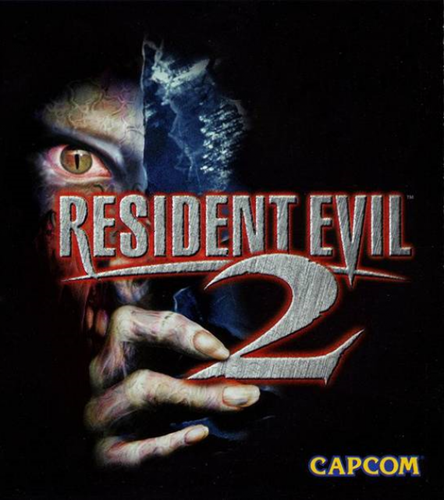
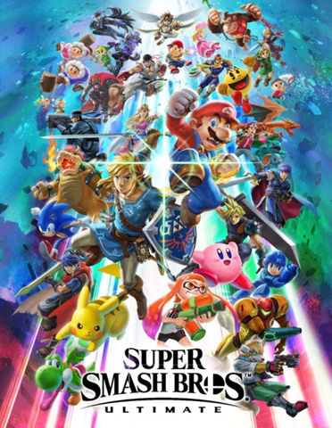

Que vídeo game são legais eu acho que todo mundo já sabe. Mas você sabia que o mercado de jogos eletrônicos é o maior mercado de entretenimento do mundo? Só no ano de 2023, esse marcado arrecadou cerca de 188 bilhões de dólares. Não é de agora que esse mercado movimenta quantidades exorbitantes de dinheiro. Desde muito tempo as os consoles fazem muito sucesso e vendem milhões de unidades.
A seguir: os 10 consoles mais vendidos da história
Lançado em 2001, o Game Boy Advance (GBA) é o quarto console portátil criado pela Nintendo e o 3º e último membro da família Game Boy. Seu sucesso se deu por vários motivos, sendo eles: ser parte da linha Game Boy, um linha que fez muito sucesso, ser um console compacto, o que facilitava os jogadores a levá-lo a qualquer lugar, e a sua vasta biblioteca de jogos que incluia diversos títulos muito populares como Pokémon, Mario, The Legend Of Zelda, Kirby, Megaman e muito mais. O console teve cerca de 81,5 milhões de unidades vendidas, sendo os seus jogos mais vendidos a dupla Pokémon Ruby e Pokémon Sapphire que, juntando as vendas de ambos, resulta em 16 milhões de cópias vendidas.

Pokémon Emerald

Mario Kart: Super Circuit
Pokémon Fire Red

Em 9º temos o Xbox 360, o queridinho de muitos jogadores. O segundo console da Microsoft, que foi lançado em 2005, vendeu cerca de 85,8 milhões de cópias e foi o responsável por tornar a Microsoft o gigante que ela é atualmente no mundo dos Video Games. O console conta com uma vasta biblioteca de jogos que inclui diversos títulos famosíssimos como Minecraft, GTA V, Red Dead Redemption, Skyrim, Halo e Call Of Duty. Sua competição na época em que foi lançado foi muito acirrada, mas, ainda sim, ele conseguiu se destacar e se tornar um clássico.

Kinect Adventures!

GTA V

Halo 3

Em 8º aparece o 1º console da Sony da lista: o PlayStation 3, lançado em 2006. Apesar de seu começo conturbado, o PS3 se tornou um fenômeno mundial. Ele foi um dos grandes competidores do Xbox 360 e, assim como o rival, vendeu milhões de unidades (cerca de 87,5 milhões). O provavel motivo dele ter superado o 360 em vendas são seus jogos exclusívos/que eram exclusívos na época. Como exemplos de exclusívos temos: The Last Of Us, God Of War 3, Little Big Planet 2, Uncharted 2 e Metal Gear Solid 4.

Gran Turismo 5

GTA V

The Last Of Us

Enfim a Nintendo retorna à lista com mais um grande sucesso. Lançado em 2006, O Nintendo Wii vendeu cerca de 101,63 milhões de unidades. A história por trás deste console é uma das mais interessantes do mundo dos Video Games. Entre 1996 e 2006, a Nintendo havia lançado 2 consoles de mesa antecessores ao Wii: O Nintendo 64 (o meu xodozinho) e o Nintendo GameCube. Os dois consoles receberam muitos jogos excelentes e venderam relativamente bem, mas foram considerados fracassos por terem sido menos vendidos que seus antecessores e muito menos ainda que os consoles da Sony PS1 e PS2, que haviam lançado na mesma época que o 64 e o GameCube respectivamente. O Wii nasceu de uma jogada arriscada da Nintendo de parar de focar tanto em potência de hardware e focar mais em inovação e diversão. Resultado: o console foi o maior sucesso. Seus controles de movimento foram uma grande inovação e permitiam que várias pessoas jogassem juntas e se divertissem bastante com jogos como Wii Sports, Mario Party e muito mais.

Super Mario Galaxy

Super Smash Bros. Brawl

Wii Sports
O primeiro console da Sony foi um sucesso imediato. Lançou em 1994 e vendeu cerca de 102,49 milhões de unidades. O PlayStation 1 era inicialmente pra ter sido um console não apenas da Sony, mas da Nintedo também (*tan tan taaaaaan*). Quando ele estava sendo planejado, a Nintedo e a Sony formaram uma parceria para criar um console novo totalmente inovador, mas, por algum motivo, a Nintedo largou a parceria e descartou o projeto. A Sony, que acreditava no potencial do console, decidiu lançá-lo anos depois e fez a Nintedo se arrepender amargamente da escolha.O console foi o berço para franquias como Tomb Raider, Resident Evil e Crash Bandicoot.

Crash Bandicoot
Resident Evil 2
Tomb Raider
Lançado em 2013 e com mais de 117 milhões de unidades vendidas, o PlayStation 4 abre o Top 5 de maneira incrível. Os motivos do sucesso desse console são vários. Eu diria que os principais são: a excelente imagem que a Sony tinha graças ao sucesso do PS3, o fato do PS4 ser um monstro em quisito hardware, o que permitia os desenvolvedores criarem jogos maiores, mais insanos e bonitos, os exclusívos fantásticos do console e o fato de suas grandes competidoras (a Nintedo e a Microsoft) terem começado mal a nova linha de consoles. Sem dúvidas um console incrível e que merece a posição que está.

Marvel's Spider-Man

God Of War (2018)

Uncharted 4: A Thief's End

Em 4º lugar nos temos os berços da maior franquia de todos os tempos, o Game Boy e o Game Boy Color. Eles são os primeiros portáteis da linha Game Boy e foram lançados, respectivamente, em 1989 e 1998. Sua popularidade se deve por eles terem sido uns dos primeiros consoles portáteis a serem criados e pelos seus jogos que são bem lembrados até mesmo hoje em dia, sendo os mais icônicos os da franquia Pokémon. Somando as vendas, os dois alcançam o 4º lugar com 188,69 milhões de unidades vendidas.
Tetris (GB)

Pokémon Red (GB)

Pokémon Gold (GBC)

Abrindo 3º lugar temos o mais recente console da Nintedo (e também meu favorito) é um fenômeno mundial. Atualmente o Nintedo Switch conta com mais de 140 milhões de unidades vendidas. Seu sucesso se deve pela sua versatilidade, podendo ser utilizado de 3 maneira diferentes, e pelos seus jogos simplesmente fantásticos. Esse console é a prova viva de que não é a potência de um console que determina sua qualidade, mas sim o quão divertido é utilizá-lo.

The Legend Of Zelda: Breath Of The Wild

Mario Kart 8 Deluxe
Super Smash Bros. Ultimate

Em 2º e com mais de 154 milhões de unidades vendidas temos mais um portátil da Nintedo: o Nintedo DS. O Nintendo DS é um portátil que se destacou bastante pelo fato da sua tela de baixo ser uma tela tátil, ou que permitia os desenvolvedores criarem diferentes jogos com ideia malucas para entreter os jogadores. Para finalizar, o DS teve várias versões, cada uma atualizava um pouco mais o console para ele ficar ainda mais bonito.
New Super Mario Brothers

The Legend Of Zelda: Phantom Hourglass

Pokémon Platinum
Acho que ninguém ficou surpreso, não é? Em 1º lugar temos o vídeo game mais querido do Brasil e do mundo: o PlayStation 2. Com mais de 155 milhões de cópias vendidas, o PS2 marcou o mundo com seus jogos incríveis que até mesmo hoje em dia são muito bem falados e sua acessibilidade. Um vídeo game lendário que marcou a história.

GTA: San Andreas
Metal Gear Solid 2: Sons of Liberty

Final Fantasy X
| Posição | Console | Ano de Lançamento | Unidades Vendidas (em milhões) | |
|---|---|---|---|---|
| 1º | PlayStation 2 | 2000 | 155 | |
| 2º | Nintendo DS | 2004 | 154 | |
| 3º | Nintedo Switch | 2017 | 140 | |
| 4º | Game Boy e Game Boy Color | 1989 e 1998 | 188,68 (somados) | |
| 5º | PlayStation 4 | 2013 | 117 | |
| 6º | PlayStation 1 | 1994 | 102,49 | |
| 7º | Nintedo Wii | 2006 | 101,63 | |
| 8º | PlayStation 3 | 2006 | 87,5 | |
| 9º | Xbox 360 | 2005 | 85,8 | |
| 10º | Game Boy Advance | 2001 | 81,5 | |
| Fonte: Wikipedia | ||||